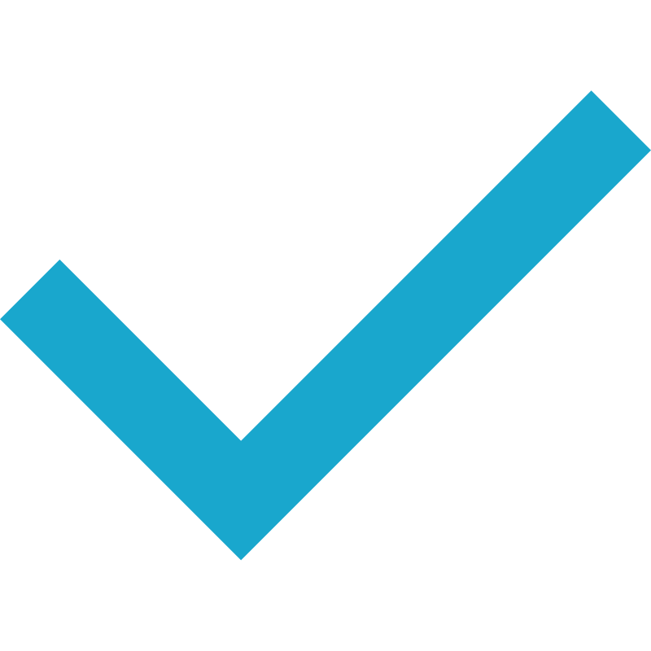

технологов - авторов
собственных техник
так и дипломы
государственного образца
и интересную профессию с
высоким уровнем дохода
ВЫБЕРИТЕ УДОБНЫЙ ДЛЯ ВАС СПОСОБ ОБУЧЕНИЯ
КУРСЫ ГРУППОВОГО ОБУЧЕНИЯ
обучения Online
КУРСЫ ONLINE ОБУЧЕНИЯ
100% внимания преподавателя уделяется одному ученику. Скорость рассмотрения учебного материала существенно возрастает.
Преподаватель быстрее выявит ошибки в работе учащегося и поможет исправить их.
Программа индивидуального обучения кератиновому выпрямлению, может корректироваться по ходу процесса, в зависимости от Вашего уровня знаний.
- - Индивидуально лучше усваиваете информацию.
- - Не можете выбрать подходящую дату обучения.
- - Не можете подобрать подходящий курс.
- - Хотите получить индивидуальный подход.
- - Просто привыкли к высокому, комфортному уровню обучения.
ТЕХНОЛОГИ
- Спикер и судья на выставке «Красота на Волге» (2017, 2018 г.)
- Спикер и судья на международной выставке «Интершарм» (2017, 2018, 2019 г.)
- Автор техник «Холодная нанопластика», «Биопластика» и многие другие.
- Создатель авторских курсов : «Все до молекул», «Все о Блонде», «Уникальный курс 5в1».
- Основательница учебных центров в г. Волгоград, г. Москва и г. Астрахань.
- Выпустила больше 5000 учеников в г. Волгограде и г. Москве.
- Совершила успешный тур по более 15 городам России и стран СНГ.
- Школа парикмахеров Ольги Забоевой, под патронажем международной фирмы Wella (2006 г.)
- Основы Трихологии (2013 г., 2020 г., 2021г.)
- Тритментолог PRO (2020 г.)
- Практикующий мастер Выпрямления и реконструкции волос с 2009г.
- В качестве технолога с 2013 г.
- Автор статей и фотомастер классов в журнале «Anima time» (2013 – 2017 г.)
- Судья Всероссийского конкурса для Мастеров кератинового выпрямления на «InterCharm» г. Москва (2018 г.)
- Спикер на международной выставке «InterCharm» (2018 – 2019 г.)
- Судья ежегодной Международной премии «Keratin hair awards Top 50» (2018 г., 2020 г., 2021 г.)
- Спикер «Keratin Quest» (2020 г.) - Государственная аккредитация на педагогическую деятельность (2020 г.)
- Первый Тритментолог – Санкт-Петербурга и Ленинградской области (с правом преподавания) (2020 г.)
- Организатор Марафона «Понятно и по делу» 1, 2, 3 сезон (для парикмахеров и мастеров выпрямления и реконструкции волос) (2020 – 2021 г.)
- Спикер Международного марафона Bless academy (для парикмахеров и мастеров выпрямления и реконструкции волос) (2020 г.)
-
Доход мастера тебя больше не устраивает
-
Хочешь перейти на другой уровень
-
Ты чувствуешь, что обладаешь уникальной информацией и готов поделиться ей
-
Любишь создавать нестандартные технологии и искать новые подходы к привычным продуктам
-
Готов стать технологом
-
Опыт работы мастером от года
-
Наличие студии/помещения для обучения (арендованной или собственной)
-
Знание базовых техник процедур реконструкции и модификации волос.
-
Владение теоретической базы по структуре волос и направлениям.
-
Знание брендов и составов в сфере реконструкции волос.
Пройдя курс, вы не становитесь штатными технологом компании Кератин Проф.
Вы становитесь, прежде всего, самостоятельным технологом, с правом преподавания, а так же обладателем бесценного багажа знаний, накопленного нашими технологами за долгие годы.
Как реализовать эти знания и воплотить в жизнь процесс преподавания решать только Вам.